1. 変更の概要
残業の算出方法を、勤務属性ごとに以下の2方式から選択できるように変更した。
| 属性タイプ | パターン時刻 | 早出/遅刻/早退 | 残業の決め方 | 残業閾値 |
|---|---|---|---|---|
| 正社員 | 登録あり | 判定する | ベース終業（baseEnd）超過 ＝ 従来どおり | 不要 |
| 正社員(時短) | 登録あり | 判定する | 実働 − 閾値（ハイブリッド） | 470分 |
| パート各種 | 登録なし | 判定しない | 実働 − 閾値 | 480分／470分 |
休憩はスタッフ個人ごとに「所定固定（自動控除）」か「都度入力（打刻画面のモーダル）」を選択できる。
閾値方式は「適用開始日」（給与計算閾値設定）以降の勤務分にのみ適用され、過去分は従来計算のまま据え置かれる。
2. 確認結果サマリー
| # | 確認項目 | 結果 | 備考 |
|---|---|---|---|
| 1 | 勤務属性マスタ一覧：残業方式列の表示 | OK | 5属性・方式と閾値時間を表示 |
| 2 | 勤務属性編集：パターン方式（正社員） | OK | A/B/C×平日土日の6枠 |
| 3 | 勤務属性編集：閾値方式（パート8h） | OK | 閾値480分・パターン任意の注記表示 |
| 4 | スタッフ編集：休憩の取り方・所定休憩 | OK | 確認中に表示漏れを発見し即修正（下記 §5） |
| 5 | 給与計算閾値設定：閾値方式の適用開始日 | OK | date入力欄を追加 |
| 6 | 打刻画面：fixed（所定固定）の人 | OK | 休憩登録ボタン非表示＋「所定休憩を自動控除」表示 |
| 7 | 打刻画面：manual（都度入力）の人 | OK | 従来どおり休憩登録ボタン＋モーダル |
| 8 | 残業計算（Service 実測） | OK | 下記 §4 のとおり期待値と一致 |
| 9 | ユニットテスト | OK | 21件パス（既存15の非回帰＋新規6） |
3. 画面確認（スクリーンショット）
3-1. 勤務属性マスタ一覧 — 残業方式列
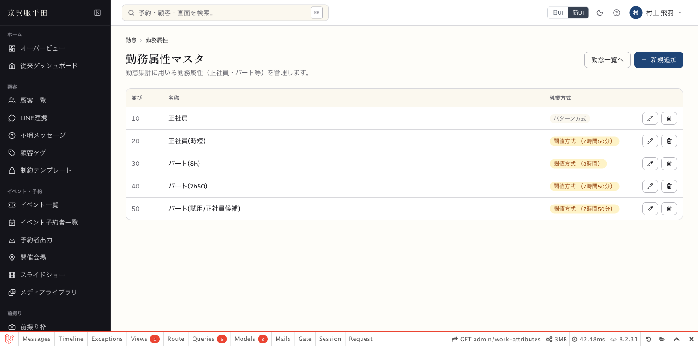
3-2. 勤務属性編集 — 正社員（パターン方式）
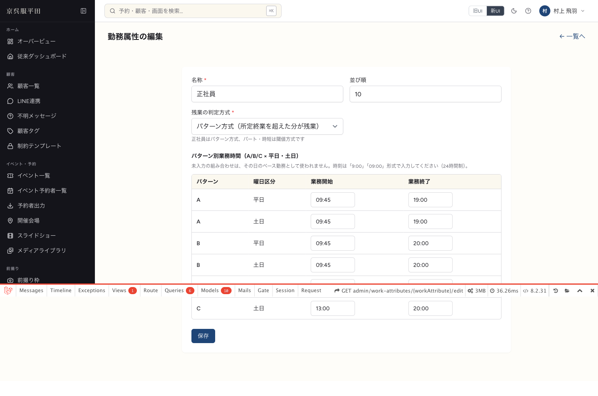
3-3. 勤務属性編集 — パート(8h)（閾値方式）
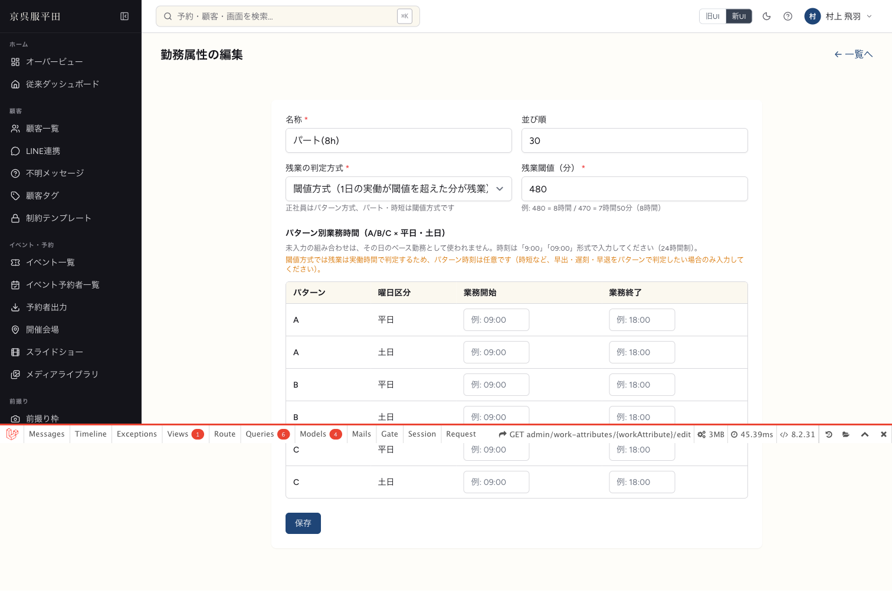
3-4. スタッフ編集 — 休憩の取り方（大野さん＝所定固定85分）
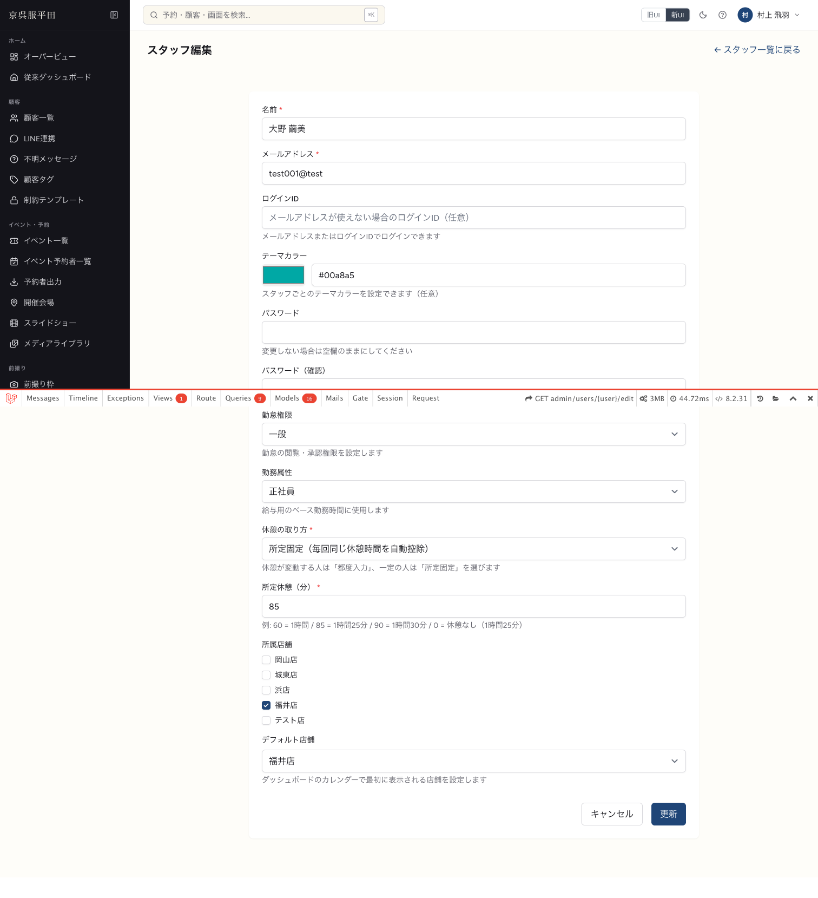
3-5. 給与計算閾値設定 — 閾値方式の適用開始日
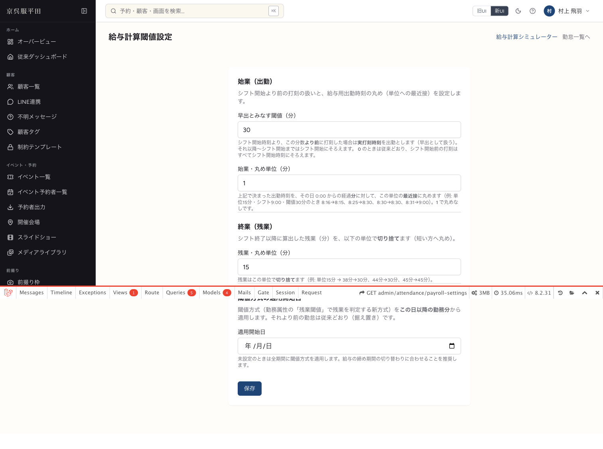
3-6. 打刻画面 — fixed（大野さん）
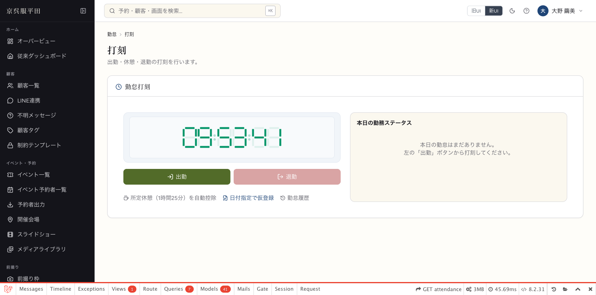
3-7. 打刻画面 — manual（石倉さん）
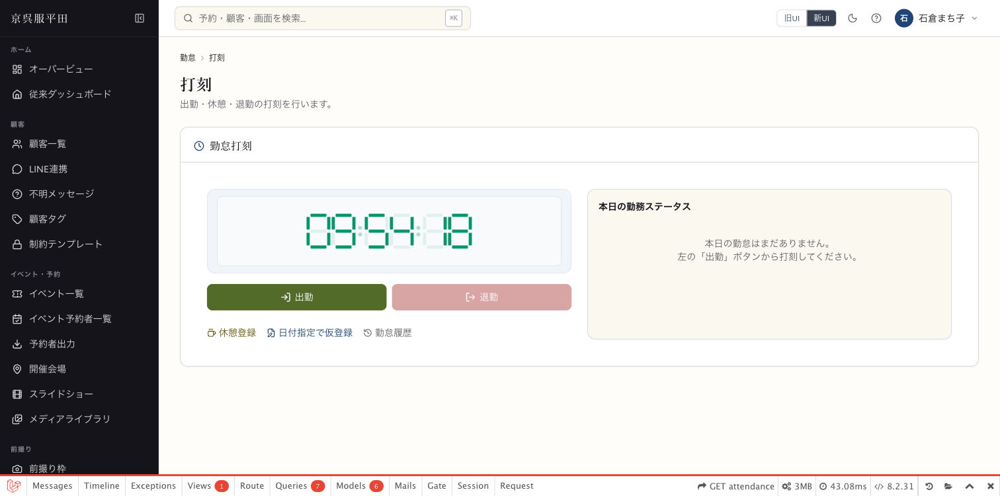
3-8. 休憩登録モーダル（manual）— 取得分数の選択式
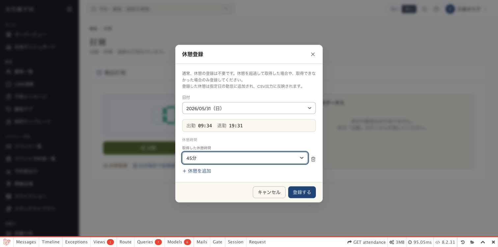
3-9. 勤怠管理画面 — スタッフ名の右に適用中の勤務属性を表示
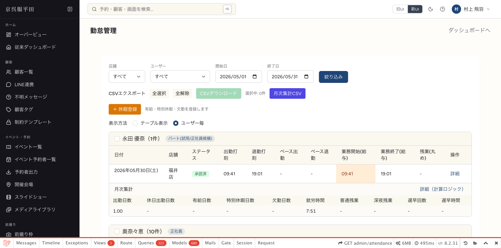
3-10. 勤怠管理画面 — 勤務属性での絞り込み
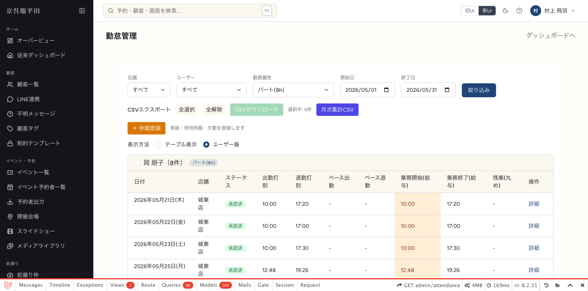
3-11. 勤怠管理画面 — 休憩列の追加
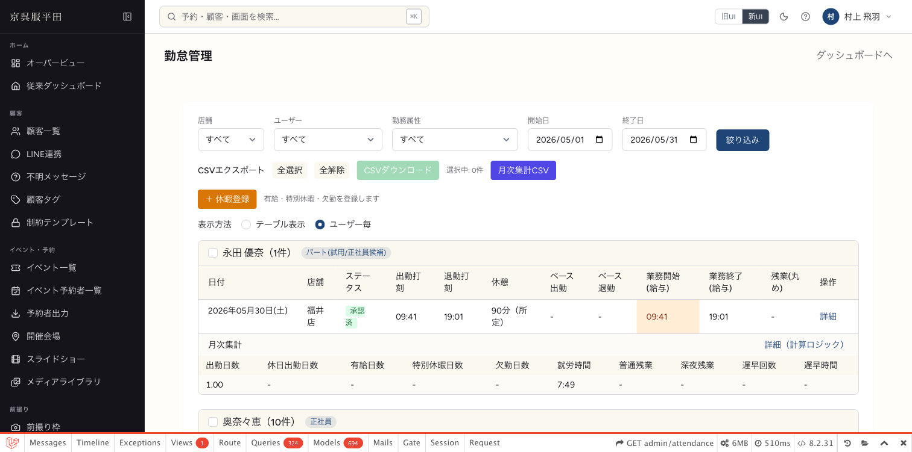
遅刻判定の境界変更（2026-07-26）
| 打刻時刻（ベース出勤 9:00 の場合） | 変更前 | 変更後 |
|---|---|---|
| 9:00:00 〜 9:00:59（同じ分） | 遅刻扱い（青表示） | 定刻扱い（遅刻にしない）。給与用出勤はベース開始にそろえる |
| 9:01:00 以降（後の分） | 遅刻扱い | 遅刻扱い（変更なし）。遅刻分数も分単位で算出 |
ベース出勤より後の分に出勤した場合のみ遅刻とし、同じ分（秒差）は遅刻にならない。表示色分け・月次集計（遅早回数/分）の両方に適用。ユニットテストで境界（9:00:59 → 定刻／9:01:00 → 遅刻）を検証済み（計23件パス）。
4. 残業計算の実測確認（ローカルDB実データ）
| ケース | スタッフ | 勤務 | 休憩 | 期待値 | 実測 | 判定 |
|---|---|---|---|---|---|---|
| 閾値方式＋固定休憩 | 小林啓子 （パート8h／fixed 60分） |
9:00〜19:00（600分） | 所定60分を自動控除 | 実働540 − 480 ＝ 残業60分 | 残業60分 | 一致 |
| 閾値方式＋休憩打刻 | 石倉まち子 （パート7h50／manual） |
10:00〜18:30（510分） | 打刻30分を控除 | 実働480 − 470 ＝ 残業10分 | 残業10分 | 一致 |
| 従来方式の維持 | 大野繭美 （正社員／base_end） |
— | — | 閾値は適用されない（null） | null → ベース終業方式 | 一致 |
※ ユニットテストでは上記に加えて、切替日境界（適用開始日より前は従来計算）・深夜残業の末尾分離（22:00〜翌5:00）・丸め処理を検証済み（計21件パス）。
5. 確認中に発見・修正した不具合
| 事象 | 原因 | 対応 |
|---|---|---|
| スタッフ編集画面（新UI）に「休憩の取り方」欄が表示されない | User/Edit.vue のフォーム定義のみ追加され、テンプレート（入力UI）の追加が漏れていた |
入力UIを追加して再ビルド。再確認で表示・保存値（所定固定85分）とも正常 修正済 |
※ スタッフ追加画面・旧UI（Legacy）版は当初から正常。
6. マスタ投入状況（ローカルDB）
勤務属性（5種）
| 属性 | 方式 | 閾値 | 人数 |
|---|---|---|---|
| 正社員 | パターン | — | 14名 |
| 正社員(時短) | 閾値 | 470分 | 0名※ |
| パート(8h) | 閾値 | 480分 | 10名 |
| パート(7h50) | 閾値 | 470分 | 5名 |
| パート(試用/正社員候補) | 閾値 | 470分 | 2名 |
※ 梨子木さんは産休中のため復帰時に割り当て。属性なし＝10名（対象外8名＋梨子木＋システム用）。
新規追加スタッフ（福井店・5名）
| 名前 | 属性 | 休憩 |
|---|---|---|
| 奥山 恵美子 | パート(7h50) | 固定30分 |
| 浜坂 千代子 | パート(7h50) | 固定30分 |
| 谷田 理美 | パート(8h) | 固定0分（なし） |
| 友田 路子 | パート(8h) | 固定0分（なし） |
| 若杉 美波 | パート(8h) | 固定0分（なし） |
login_id：姓ローマ字_fukui（例 okuyama_fukui）／初期パスワードは別途管理。
7. 運用開始前の残タスク
閾値方式の適用開始日が未設定（現在は全期間に新方式が適用される状態）。
管理画面「給与計算閾値設定」→「閾値方式の適用開始日」に、給与締めの切り替わり日を設定すること。
管理画面「給与計算閾値設定」→「閾値方式の適用開始日」に、給与締めの切り替わり日を設定すること。
- 梨子木さん復帰時：「正社員(時短)」の割り当てと勤務時間・閾値の最終確認
- 永田さん・市本さんの正社員化タイミングで属性を「正社員」へ手動切替
- 本番反映時：マイグレーション3本の実行＋本番DBへの勤務属性・スタッフ割り当ての投入
8. 検証環境について
- ローカル環境（localhost:8000）で実施。本番環境には未反映。
- 検証のため一時的に変更した認証情報（検証用アカウントのパスワード・店舗端末パスワード・端末登録店舗）は、検証完了後にすべて元の値へ復元済み。
- ユニットテスト：
tests/Unit/AttendancePayrollTimeServiceTest.php— 21件パス。 - フロントエンドビルド（
npm run build）成功。